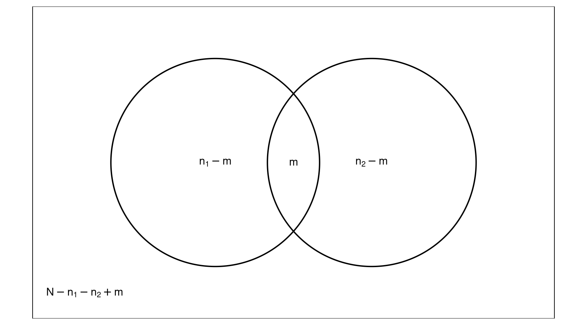

You can also download a PDF copy of this lecture.
The simplest mark-recapture design involves two steps.

Every unit in the population could be classified in terms of whether it was included or excluded from each sample.| First Sample | included | excluded | Total |
|---|---|---|---|
| included | \(m\) | \(n_1-m\) | \(n_1\) |
| excluded | \(n_2-m\) | \(N-n_1-n_2+m\) | \(N-n_1\) |
| Total | \(n_2\) | \(N-n_2\) | \(N\) |
| First Sample | included | excluded | Total |
|---|---|---|---|
| included | 62 | 238 | 300 |
| excluded | 138 | ? | ? |
| Total | 200 | ? | \(N\) |
If we assume that inclusion/exclusion in the two samples are independent, then the expected count for a unit being included in both samples is \[ \frac{R \times C}{T} = \frac{n_1n_2}{N}. \] If the sample sizes are not too small, the expected and observed counts for the number of units in both samples will tend to be approximately equal (assuming independence), so we can write \[ m \approx \frac{n_1n_2}{N} \Rightarrow N \approx \frac{n_1n_2}{m}, \] which gives the “Lincoln-Petersen” estimator of \(N\), \[ \hat{N} = \frac{n_1n_2}{m}. \] Another way to motivate this estimator is to observe that the proportion of marked units in the second sample (\(m/n_2\)) estimates the proportion of marked units in the population (\(n_1/N\)). So if we write \[ \frac{m}{n_2} \approx \frac{n_1}{N}, \] and “solve” for \(N\) we get \[ N \approx \frac{n_1 n_2}{m} \] which implies the Lincoln-Peterson estimator \(\hat{N} = n_1 n_2 / m\).
Example: Assuming independence of inclusion/exclusion in the two samples, what is our estimate of the number of deer in the mark-recapture study described earlier?
Example: Merry and Pippin want to estimate the number of Hobbits that attended Bilbo’s 111-th birthday party. They each made a list of the Hobbits that they talked with at the party. There were 72 Hobbits on Merry’s list, 100 Hobbits on Pippin’s list, and 50 on both lists.| Pippin’s List | included | excluded | Total |
|---|---|---|---|
| included | 50 | 50 | 100 |
| excluded | 22 | ? | ? |
| Total | 72 | ? | \(N\) |
What is the estimate of the number of Hobbits that attended the party?
“The invitations were limited to twelve dozen (a number also called by the hobbits one Gross, though the word was not considered proper to use of people); and the guests were selected from all the families to which Bilbo and Frodo were related, with the addition of a few special unrelated friends (such as Gandalf).” — J. R. R. Tolkien, The Fellowship of the Ring
In practice, the independence may be violated at least a couple of ways.
A confidence interval for \(N\) can be written in general as \[ \hat{N} \pm \underbrace{z \times \text{standard error of $\hat{N}$}}_{\text{margin of error}}. \] But the standard error depends on the sampling design used.
Direct Sampling: The second sample is selected to obtain \(n_2\) units. The size of the second sample (\(n_2\)) is fixed while the number of marked units in that sample (\(m\)) is random.
Example: A sample of 300 deer are captured, tagged, and released. A second random sample of 200 deer is selected using direct sampling. It includes 62 tagged deer. The standard error is \[ \sqrt{\frac{n_1n_2(n_1-m)(n_2-m)}{m^3}} = \sqrt{\frac{300 \times 200(300-62)(200-62)}{62^3}} \approx 91. \] So the confidence interval for \(N\) would be approximately \[ 968 \pm 1.96 \times 91 \Rightarrow 968 \pm 178 \Leftrightarrow (790, 1146). \]
Inverse Sampling: Units sampled until \(m\) marked units are observed. The size of the second sample (\(n_2\)) is random while the number of marked units in that sample (\(m\)) is fixed.
Example: A sample of 300 deer are captured, tagged, and released. Then deer are observed until 62 tagged dear are observed using inverse sampling. This requires observing 200 deer. The standard error is \[ \sqrt{\frac{n_1^2n_2(n_2-m)}{m^2(m+1)}} = \sqrt{\frac{300^2 \times 200(200-62)}{62^2(62+1)}} \approx 101. \] So the confidence interval for \(N\) would be \[ 968 \pm 1.96 \times 101 \Rightarrow 968 \pm 199 \Leftrightarrow (769, 1167). \]